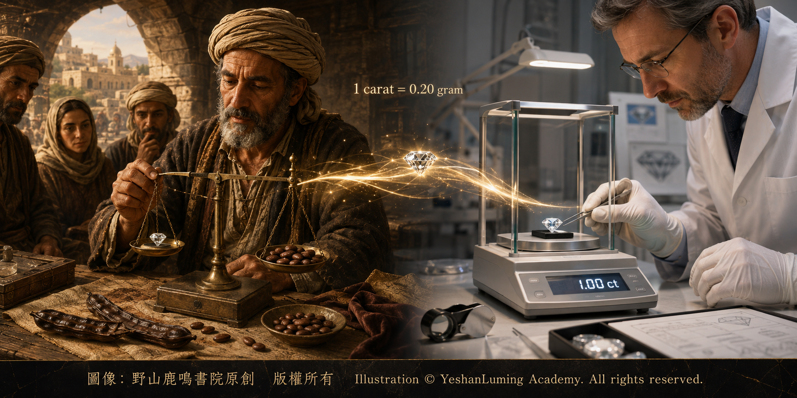

克拉的祕密·重量為什麼能決定價值The Secret of the Carat: Why Weight Profoundly Influences a Diamond’s Value
The World of Gemstones · Diamond SeriesThe Secret of the Carat: Why Weight Profoundly Influences a Diamond’s Value
The World of Gemstones · Diamond Series克拉的祕密·重量為什麼能決定價值
寶石世界·鑽石篇
寶石世界·鑽石篇（115）The World of Gemstones · Diamond Series (115)
在4C之中，最容易理解的一項，往往也是最容易被誤解的一項，那就是克拉。
當人們談論鑽石時，最常問的一個問題就是：「多少克拉？」這個數字看似簡單，卻在很大程度上影響著一顆鑽石的價格與地位。但如果只把克拉理解為「大小」，就會忽略它真正的意義。
從寶石學的角度看，克拉（Carat）其實是一個重量單位，而不是尺寸單位。一克拉等於0.2克，也就是200毫克，又可以分為100分。
「克拉」這個名稱，通常被認為來源於古代寶石商稱量寶石時使用的角豆種子。這些種子容易取得，又可以經過挑選作為天平的配重，因而逐漸與寶石重量聯繫在一起。到了1907年，國際上正式採用公制克拉，規定一克拉等於200毫克，從而使世界各地的寶石重量有了統一標準。
然而，重量並不等於視覺大小。一顆切工較深的鑽石，可能看起來比實際克拉數所代表的常見尺寸小；一顆切工較淺的鑽石，正面看起來則可能顯得更大。也就是說，克拉表示的是鑽石的重量，而不是它從正面看上去的面積。
按照寶石學的原理，鑽石的價格與其稀有程度密切相關，而克拉重量正是影響鑽石稀有程度的重要因素之一。
在自然界中，小鑽石相對常見，但隨著重量增加，達到相同顏色、淨度和整體品質的大鑽石會越來越稀少。重量越大，符合寶石級品質並能夠保持完整的鑽石，出現的概率通常越低。這種稀缺性，使鑽石價格並不是隨重量線性上升，而常常呈現加速增長的趨勢。
在4C之中，最容易理解的一項，往往也是最容易被誤解的一項，那就是克拉。
當人們談論鑽石時，最常問的一個問題就是：「多少克拉？」這個數字看似簡單，卻在很大程度上影響著一顆鑽石的價格與地位。但如果只把克拉理解為「大小」，就會忽略它真正的意義。
從寶石學的角度看，克拉（Carat）其實是一個重量單位，而不是尺寸單位。一克拉等於0.2克，也就是200毫克，又可以分為100分。
「克拉」這個名稱，通常被認為來源於古代寶石商稱量寶石時使用的角豆種子。這些種子容易取得，又可以經過挑選作為天平的配重，因而逐漸與寶石重量聯繫在一起。到了1907年，國際上正式採用公制克拉，規定一克拉等於200毫克，從而使世界各地的寶石重量有了統一標準。
然而，重量並不等於視覺大小。一顆切工較深的鑽石，可能看起來比實際克拉數所代表的常見尺寸小；一顆切工較淺的鑽石，正面看起來則可能顯得更大。也就是說，克拉表示的是鑽石的重量，而不是它從正面看上去的面積。
按照寶石學的原理，鑽石的價格與其稀有程度密切相關，而克拉重量正是影響鑽石稀有程度的重要因素之一。
在自然界中，小鑽石相對常見，但隨著重量增加，達到相同顏色、淨度和整體品質的大鑽石會越來越稀少。重量越大，符合寶石級品質並能夠保持完整的鑽石，出現的概率通常越低。這種稀缺性，使鑽石價格並不是隨重量線性上升，而常常呈現加速增長的趨勢。
也就是說，在顏色、淨度、切工及其他條件大致相同的情況下，一顆2克拉鑽石的價格往往不只是1克拉鑽石的兩倍，而可能達到數倍。
這是因為鑽石的價格通常不只是由總重量計算，還與每克拉單價有關。當一顆鑽石進入更稀少的重量範圍時，它的每克拉單價也可能隨之上升。因此，總重量增加與每克拉單價提高，會共同推動整顆鑽石價格的增長。
鑽石通常使用精密電子天平進行稱重。按照GIA的規則，重量會以小數點後兩位記錄在鑽石鑑定報告上，但在進位時採用比普通數學進位更加嚴格的方式：只有當小數點後第三位是9時，才會向上進位。例如，1.768克拉記錄為1.76克拉，而1.769克拉才記錄為1.77克拉。

Click to enlarge
這種精確的測量與統一的記錄方式，使不同鑽石之間的比較變得更加客觀，也避免極其微小的重量差異被不當放大。
同時，鑽石市場中還存在一些被稱為「關鍵重量」的特殊重量點，例如0.50克拉、0.75克拉、1.00克拉、1.50克拉和2.00克拉等。當一顆鑽石達到或跨過這些受到市場重視的重量點時，每克拉價格往往可能出現明顯提升。這不僅與稀有性有關，也受到消費習慣和市場心理的影響。
例如，一顆0.99克拉與一顆1.00克拉的鑽石，在肉眼觀察下幾乎沒有差異，但價格卻可能存在明顯差距。這種現象，反映了數字與市場心理對價值判斷的影響。
從地質學的角度看，大重量鑽石的稀少，與其形成和保存條件密切相關。要形成大尺寸的鑽石晶體，需要碳源、壓力、溫度和生長介質等多種條件恰當配合；形成之後，它還必須經歷漫長的地質歷史，並在火山岩漿運移、礦石開採與加工過程中保持相對完整。
在這些階段中，鑽石都可能發生破裂、溶蝕或損傷，使其最終重量大幅減少。因此，一顆大重量鑽石能夠相對完整地到達人類手中，本身就是多種條件共同作用的結果，其數量自然十分稀少。
在歷史上，許多著名鑽石往往都以其驚人的重量聞名。例如我們之前提到的庫里南鑽石，其原石重量達到3,106.75克拉，是迄今發現的最大寶石級鑽石原石。它的發現不僅震驚世界，也讓人們對大重量鑽石的稀有性有了更加直觀的認識。
關於庫里南鑽石如何被切割成多顆成品鑽石，以及它們如何分佈於英國王室的珠寶之中，我們將在後面的專文中為您詳細介紹。
然而，回到日常選購，一個值得思考的問題是：克拉越大，就一定越好嗎？
從寶石學與實用角度來看，答案並不絕對。一顆克拉重量較小但切工優秀、顏色與淨度良好的鑽石，其整體視覺效果，往往優於一顆重量較大但其他品質較低的鑽石。
這也說明，4C共同影響著一顆鑽石的品質、外觀與價格，不能依靠任何一項標準單獨作出完整判斷。
也許可以這樣理解：克拉代表的是一顆鑽石「存在的分量」，而真正決定它是否美麗動人，還需要其他因素的共同配合。
當我們只看重量時，看到的是數字；當我們綜合考量時，看到的才是一顆完整而真正的寶石。
（未完待續）
Of the 4Cs, the carat is often the easiest to understand—and also the easiest to misunderstand.
When people talk about diamonds, one of the questions they ask most frequently is, “How many carats is it?” This number may appear simple, yet it has a profound influence on a diamond’s price and standing. But if carat is understood merely as “size,” its true meaning will be overlooked.
From a gemological perspective, the carat is actually a unit of weight, not a unit of physical dimensions. One carat is equal to 0.2 grams, or 200 milligrams, and can be divided into 100 points.
The name “carat” is generally believed to have originated from the carob seeds used by ancient gemstone merchants when weighing precious stones. These seeds were readily available and could be selected for use as counterweights on a balance, gradually becoming associated with gemstone weight. In 1907, the metric carat was officially adopted internationally, establishing one carat as equal to 200 milligrams and thereby creating a uniform standard for gemstone weight throughout the world.
Weight, however, is not the same as apparent size. A deeply cut diamond may appear smaller than the dimensions normally associated with its actual carat weight, while a shallowly cut diamond may look larger when viewed face-up. In other words, carat indicates a diamond’s weight, not the surface area it appears to occupy when viewed from above.
According to gemological principles, the price of a diamond is closely related to its rarity, and carat weight is one of the important factors influencing that rarity.
Small diamonds are relatively common in nature, but as weight increases, diamonds possessing comparable color, clarity, and overall quality become increasingly scarce. The larger the diamond, the lower the probability that it will possess gem-quality characteristics and remain intact. Because of this scarcity, diamond prices do not increase linearly with weight, but often rise at an accelerating rate.
Of the 4Cs, the carat is often the easiest to understand—and also the easiest to misunderstand.
When people talk about diamonds, one of the questions they ask most frequently is, “How many carats is it?” This number may appear simple, yet it has a profound influence on a diamond’s price and standing. But if carat is understood merely as “size,” its true meaning will be overlooked.
From a gemological perspective, the carat is actually a unit of weight, not a unit of physical dimensions. One carat is equal to 0.2 grams, or 200 milligrams, and can be divided into 100 points.
The name “carat” is generally believed to have originated from the carob seeds used by ancient gemstone merchants when weighing precious stones. These seeds were readily available and could be selected for use as counterweights on a balance, gradually becoming associated with gemstone weight. In 1907, the metric carat was officially adopted internationally, establishing one carat as equal to 200 milligrams and thereby creating a uniform standard for gemstone weight throughout the world.
Weight, however, is not the same as apparent size. A deeply cut diamond may appear smaller than the dimensions normally associated with its actual carat weight, while a shallowly cut diamond may look larger when viewed face-up. In other words, carat indicates a diamond’s weight, not the surface area it appears to occupy when viewed from above.
According to gemological principles, the price of a diamond is closely related to its rarity, and carat weight is one of the important factors influencing that rarity.
Small diamonds are relatively common in nature, but as weight increases, diamonds possessing comparable color, clarity, and overall quality become increasingly scarce. The larger the diamond, the lower the probability that it will possess gem-quality characteristics and remain intact. Because of this scarcity, diamond prices do not increase linearly with weight, but often rise at an accelerating rate.
In other words, when color, clarity, cut, and other conditions are approximately equal, a two-carat diamond will often cost not merely twice as much as a one-carat diamond, but several times as much.
This is because a diamond’s price is not calculated solely according to its total weight; it is also influenced by its price per carat. When a diamond enters a rarer weight range, its price per carat may also rise. The increase in total weight and the increase in price per carat therefore work together to drive up the price of the entire diamond.
Diamonds are normally weighed on precision electronic balances. Under GIA rules, the weight recorded on a diamond grading report is expressed to two decimal places, but a stricter method than ordinary mathematical rounding is used: the second decimal place is rounded upward only when the third decimal digit is 9. For example, a diamond weighing 1.768 carats is recorded as 1.76 carats, while one weighing 1.769 carats is recorded as 1.77 carats.
Click to enlarge
This precise method of measurement and standardized system of recording make comparisons among diamonds more objective, while also preventing extremely small differences in weight from being improperly magnified.
At the same time, the diamond market recognizes certain special thresholds known as “key weights,” including 0.50, 0.75, 1.00, 1.50, and 2.00 carats. When a diamond reaches or crosses one of these market-sensitive weight points, its price per carat may rise noticeably. This is related not only to rarity, but also to consumer preferences and market psychology.
For example, there is almost no visible difference between a 0.99-carat diamond and a 1.00-carat diamond, yet there may be a noticeable difference in price. This phenomenon reflects the influence of numbers and market psychology upon judgments of value.
From a geological perspective, the scarcity of large diamonds is closely related to the conditions under which they form and are preserved. The formation of a large diamond crystal requires the proper interaction of many factors, including a source of carbon, pressure, temperature, and a suitable growth medium. Once formed, it must also survive a long geological history and remain relatively intact during volcanic magma transport, mining, and processing.
At every one of these stages, a diamond may be fractured, resorbed, or otherwise damaged, substantially reducing its final weight. A large diamond that reaches human hands in a relatively intact state is therefore the result of many conditions working together, which naturally makes such diamonds exceedingly rare.
Throughout history, many celebrated diamonds have become renowned for their astonishing weight. One example is the Cullinan Diamond, which we discussed previously. In its rough form, it weighed 3,106.75 carats and remains the largest gem-quality rough diamond ever discovered. Its discovery not only astonished the world, but also gave people a far more vivid understanding of the rarity of large diamonds.
In a future article, we will examine in detail how the Cullinan Diamond was cut into a number of finished diamonds and how those stones came to be distributed among the jewels of the British Royal Family.
Returning to the practical matter of choosing a diamond, however, one question deserves consideration: Is a larger carat weight necessarily better?
From both gemological and practical perspectives, the answer is not absolute. A diamond with a lower carat weight but excellent cut, color, and clarity will often produce a more impressive overall visual effect than a heavier diamond of lower quality in the other factors.
This also demonstrates that the 4Cs jointly influence a diamond’s quality, appearance, and price. No complete judgment can be made on the basis of any single factor alone.
Perhaps we can understand it this way: Carat represents the “weight of a diamond’s presence,” but whether that diamond is truly beautiful and captivating depends upon the harmonious contribution of other factors as well.
When we look only at weight, we see a number; when we consider all the factors together, we see a complete and genuine gemstone.
(To be continued)